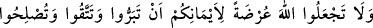
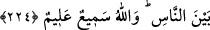

224. Yemînlerinizden dolayı Allah’ı (O’nun adını), iyilik etmenize, O’ndan
sakınmanıza ve insanların arasını düzeltmenize engel kılmayın. Allah işitir ve bilir.
Rivâyet edilir ki: Beşîr b. Nûmân el-Ensârî, Abdullah b. Revâha’nın kız kardeşi
olan hanımını boşadı. Sonra onunla yeniden evlenmek istedi. Bu sırada Abdullah b.
Revâha ise Beşîr’in yanına gitmemeye, onunla konuşmamaya ve kızkardeşi ile onun
arasını ıslah etmemeye yemin etmişti. Kendisine Beşîr’in yeniden evlenme teklifi
bildirilince: “Ben şöyle şöyle yapmamağa Allah adına yemin ettim. Dediğiniz şeyi
yapmam için yemînimi bozmam gerekir.” dedi. Bu olay üzerine bu âyet nâzil oldu.
“Urza” sunulan, arz olunan şey, mânâsında bir masdar olup, herhangi bir şeyi örten ve
içindekilerinin görülmesine engel teşkil eden şeye isim yapılmıştır. Meselâ yemek veya
su kabının üzerine konan tahta parçasının, kabın içinde olanı örtüp, kap ile ona
yönelecek olan şey arasında bir perde veya engel olması bu mânâya örnek olarak
gösterilebilir. Yâni Allah adını anmayı ve Allah adına yemin etmeyi iyilik, takvâ ve
ıslah gibi, yapmamaya yemin ettiğiniz hayırlı işleri işlemeye mâni kılmayın. Zira Allah
adına yemin etmek, bu tür hayırlı işlerin yapılmasına engel olmaz. Binâenaleyh âyette
zikredilen “eymân” lâfzı, “yapılmamak üzere yemin edilmiş hayırlı işlerden” mecâzdır.
Yeminin kendisine taalluku sebebiyle “yemin edilen şey”, “yemin” olarak
isimlendirilmiştir.
Allah yemînlerinizi işitir ve niyetlerinizi bilir. Ta ki Allah’ın kalblerinizde taşıdığınız
niyetinizi bildiğini düşünerek dünyevî basit maksadlar için Allah adına yemin etmeyi
terkedip Allah Teâlâ’ya gerekli ta’zîm ve hürmeti gösteresiniz. Dolayısıyla bu husûsa
dikkat edin ve teklif olunduğunuz emirleri gereğince yerine getirin. Mesnevî’de denilir
ki:
Cenâb-ı Hakk kendi hakkında buyurdu ki: İşiticiyim,
Tâ ki insanlar dudaklarını kötü sözden tutalar.
Yine zâtı hakkında buyurdu ki: Görücüyüm.
Böylece ne işlerlerse gördüğünü söyleyerek kulları uyardı.
Ben her şeyden haberdarım ve her şeyi bilirim, buyurarak:
İnsanları fesâda düşmekten sakındırmış oldu.
Âyet-i celîle, hiçbir kimseye iyilik yapmamak, isyandan kaçınmamak, nefsinin
isteklerini yerine getirmek ve birbirine düşman ve dargın olan insanların arasını
düzeltmemek üzere Allah adına yemin eden herkese şâmildir. Sanki Allah Teâlâ şöyle
demektedir: “Başkalarına iyilik yapmak, isyandan kaçınmak v.s. gibi şeyler iyilik ve
tâat cinsindendir. Yemin etmiş olmanız, bunların yapılmasını engellemez. Şayet bunları
yapmamaya yemin etmişseniz hemen yemîninizden vazgeçip bu gibi hayırlı işleri
işlemeye koyulunuz. “Biz Allah adına yemin ettik. Bu gibi işleri yapıp yemînimizi